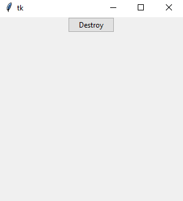

Grundlagen
Wie funktioniert Programmierung mit tkinter?
Es werden Widgets erzeugt. Diese Widgets beinhalten Optionen. Einige dieser Optionen beeinflussen das Aussehen, andere das Verhalten. Beispielsweise kann einem Label ein Bild mitgegeben werden, so dass ein Bild neben Text angezeigt wird. Einem Knopf kann eine Callback-Funktion mitgegeben werden, so dass diese Funktion beim Drücken des Knopfes aufgerufen wird.
Dieses Widget wird in ein Layout eingefügt - fertig.
Es gibt mindestens ein Hauptfenster, in dem Widgets eingebunden werden können.
tk und ttk
Tk kennt Widgets ohne Präfix und mit Präfix "ttk". "ttk" steht dabei für "Themed ToolKit".
ttk-Widgets, auf die in dieser Doku der Fokus liegt, lassen sich stylen, sie verfügen über die
Option style mit der sich das Aussehen verändern lässt. Die weiterhin
enthaltenen tk-Widgets lassen sich ebenfalls im Aussehen verändern, haben aber einen anderen
Satz an Optionen, insbesondere mehr und andere Optionen.
Tags
In vielen Bereichen von Tk, wie etwa Canvas-Items, findet man die zusätzliche Angabe von Tags.
Bei Tags handelt es sich um Tupel von frei-definierbaren Strings, die nicht mit einer
Ziffer beginnen. Sie dienen dazu, Informationen über Elemente zu speichern, oder Elemente
auszuzeichnen. So bekommt beispielsweise ein Canvas-Item den Tag 'current'
wenn es unter dem Mauszeiger liegt. Auf der Basis von Tags lassen sich Konfigurationen vornehmen,
beispielsweise alle ungeraden Zeilen in einem ttk.Treeview besonders einfärben.
Ist tkinter vorhanden?
Möchte man herausfinden, ob tkinter bereits installiert ist, kann man das folgendermaßen tun:
import tkinter as tk
tk._test()Version und Patchlevel von tkinter ermitteln
Mit Python Version 3.11.2 erhält man als Ausgabe: 8.6.12.
import tkinter as tk
tcl = tk.Tcl()
print(tcl.call('info', 'patchlevel'))Alternativ funktioniert spätestens seit Version 3.11:
import tkinter as tk
tcl = tk.Tcl()
tcl.info_patchlevel()
# Ausgabe: _VersionInfoType(major=8, minor=6, micro=12, releaselevel='final', serial=0)Einführendes Beispiel
import tkinter as tk
from tkinter import ttk
if __name__ == '__main__':
window = tk.Tk()
button = ttk.Button(window, text='Destroy', command=window.destroy)
button.pack()
window.geometry("300x300")
window.mainloop()In den Zeilen 1 und 2 binden wir die benötigten Module ein. ttk ist die modere Tk-Variante: ttk-Widgets lassen sich stylen.
Mit tk.Tk() wird das Hauptfenster erzeugt, dem
ein Button hinzugefügt wird. Der Button enthält als Optionen einen Verweis auf das
Hauptfenster, einen Text und einen Verweis auf eine Callback-Funktion.
Mit button.pack() wird der Knopf einem sehr
einfachen Layout hinzugefügt.
Das Hauptfenster selber wird mit
window.geometry("300x300") vergrößert, anschließend
beginnt mit window.mainloop() die
Event-Verarbeitung.
Dasselbe Programm in objektorientierter Schreibweise, wie es auf diesen Seiten in ähnlicher Weise benutzt wird:
import tkinter as tk
from tkinter import ttk
class A(tk.Tk):
def __init__(self):
super().__init__()
self.geometry("300x300")
self._createWidgets()
def _createWidgets(self):
button = ttk.Button(self, text='Destroy', command=self._onDestroy)
button.pack()
def _onDestroy(self):
self.destroy()
if __name__ == '__main__':
window = A()
window.mainloop()